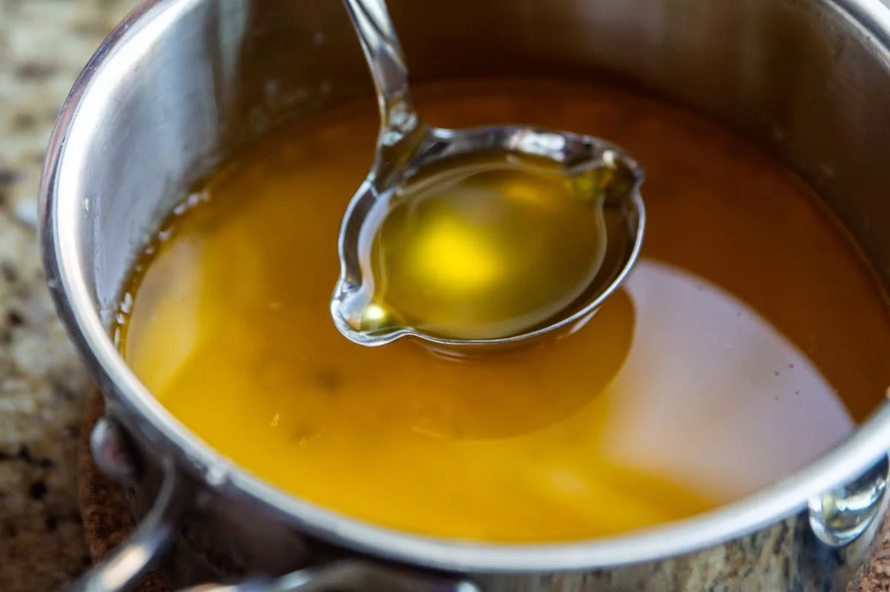

Clarified Butter

Clarified butter (also knwon as ghee) is butter with the milk solids removed, so that the only thing left is the pure butter fat. This is good for people who are sensitive to dairy but still want to enjoy that buttery taste. The process is quite simple, and all you'll need are some basic household items. Let's get started!
You're going to need a good amount of butter. The higher the quality the better. Try for grassfed butter. Please note that this will not work with artificial butter or margarine. You'll need a pan big enough to melt the butter in, a slotted spoon or laddle, a mason jar or container big enough to store the finished product in, and cheesecloth as a filter (a freshly cleaned dish cloth will work too).
to recap, what you'll need is;
- High quality butter
- Pan
- Slotted spoon/ladle
- Mason jar
- Cheesecloth (or freshly cleaned dishcloth)
- Begin by placing all your butter into the pan. Put the pan on a medium-low heat to start melting the butter.
- Once the butter is melted all the way, turn the heat down to low. The goal is not to boil the butter, but to gently heat it until it starts to bubble a little.
- After about 10 minutes you should start to see what appears to be white foam bubble up to the surface. These are the milk solids we will be removing. Simply take your slotted spoon and scoop them out as they come to the surface.
- After scooping these out for another 10 minutes, it'll be time to start filtering the rest of the milk solids out. Grab your mason jar and set up the cloth to act as a filter as you pour the butter in.
- Gently and slowly pour the butter into the jar, or better yet use a laddle. You should't see hardly any milk solids in the jar. If there are, you may need to filter twice.
- You have clarified butter! Enjoy it the same way you would normal butter. It's great to cook with because of the high smoke point.
- Refridgeration is not necessary if you will be using it up within a couple months. Otherwise you should store it in the fridge.